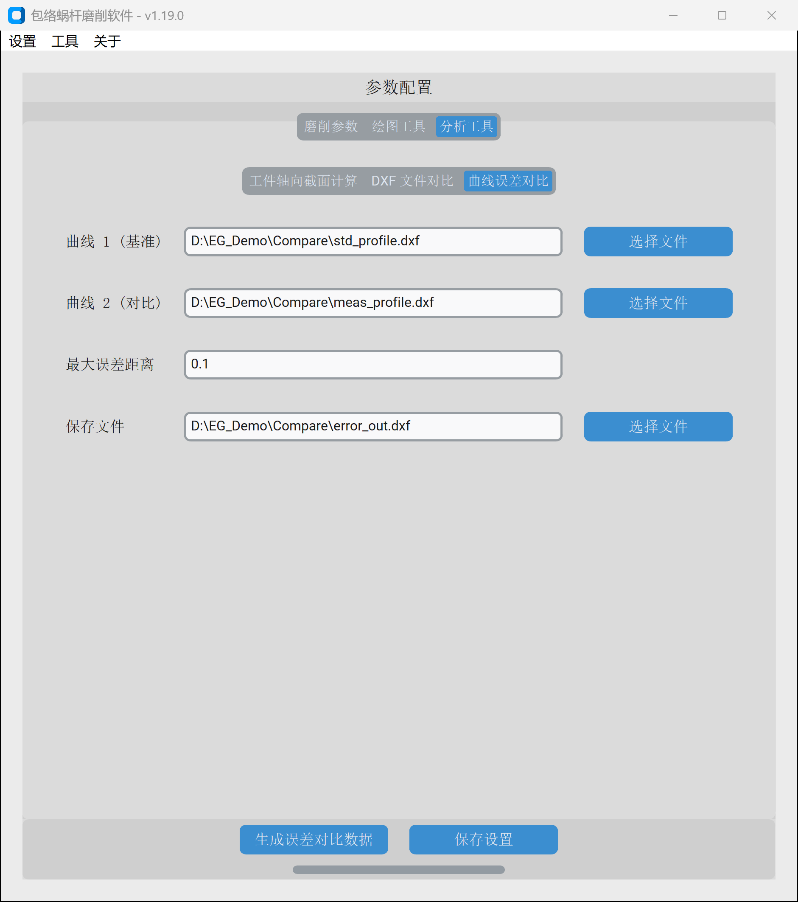
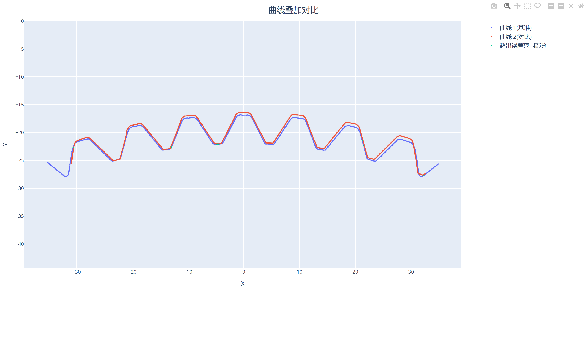
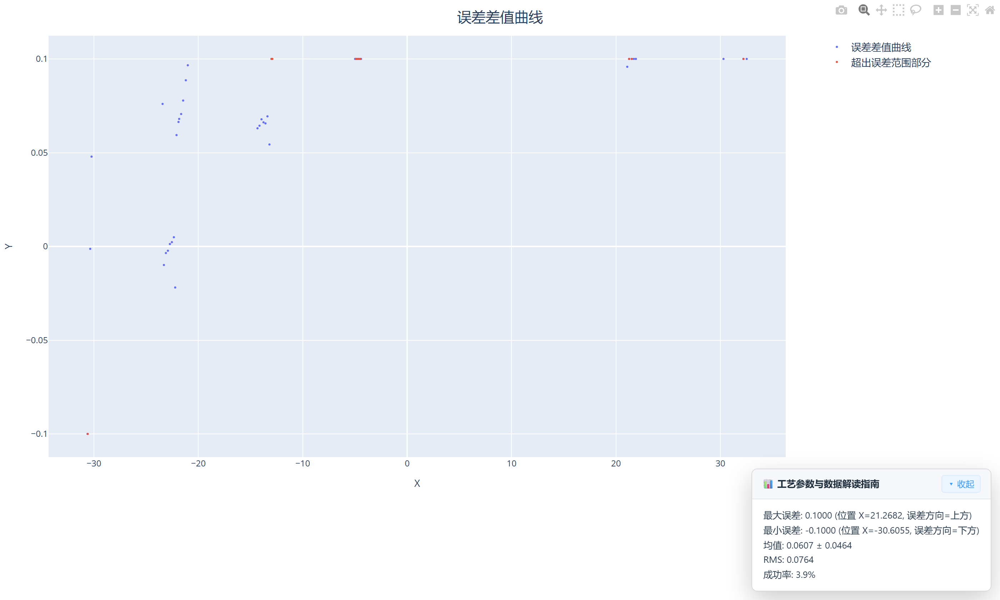

4.3 曲线误差对比
曲线误差对比 在 DXF 文件对比 定性观察的基础上，进一步沿基准曲线法线方向定量计算两条曲线之间的逐点偏差，自动统计均值、标准差、RMS 均方根误差并高亮超限点区。

一、参数说明与核心算法逻辑
| 参数名称 | 说明与设置建议 |
|---|---|
曲线 1 (基准) |
标准件或理论设计 .dxf 曲线（例如 std_profile.dxf）。软件对其沿弧长按 0.005 mm 重采样。 |
曲线 2 (对比) |
实际试磨或测绘 .dxf 曲线（例如 meas_profile.dxf）。 |
最大误差距离 |
沿基准曲线每一点法线方向搜索对比曲线交点的最大允许范围（界面默认 0.5 mm，示例设 0.1 mm）。• 设置原则：在能覆盖实际最大偏移的前提下尽量取小，避免跨齿误匹配到相邻齿面；若设置过小（如偏移达 0.3 mm 时仅设 0.1 mm），大量点会被判为超限从而降低有效 成功率。 |
保存文件 |
选择基准路径后，软件会在同目录生成 <文件名>-differences.dxf、<文件名>-differences.html 与 <文件名>-curve-compare.html。 |
二、误差方向符号约定
- 正误差（
上方）：曲线 2 (对比)位于曲线 1 (基准)的 Y 轴正向侧； - 负误差（
下方）：曲线 2 (对比)位于曲线 1 (基准)的 Y 轴负向侧； - 超出范围：超出
最大误差距离的点在两张图中均以独立的超出误差范围部分图层标记。
三、真实数据输出结果解读（std_profile.dxf vs meas_profile.dxf）
1. 曲线叠加对比（*-curve-compare.html）
由图可见对比曲线（红色）整体略高于基准曲线（蓝色），且基准曲线两侧比实测曲线更长：

2. 误差差值曲线与统计卡片（*-differences.html）
当 最大误差距离 设为 0.1 mm 时，真实统计卡片与分布如下（有效范围外出现红色超限点）：

- 实时统计指标：
最大误差:0.1000（位置X=21.2682，误差方向=上方）最小误差:-0.1000（位置X=-30.6055，误差方向=下方）均值:0.0607 ± 0.0464｜RMS:0.0764｜成功率:3.9%
- 工程调优提示：当界面出现较高比例红点或较低
成功率时，表明工件存在整体偏置或余量差超过当前阈值；将最大误差距离放宽至0.5或0.8 mm即可纳入完整偏差带（本组实测数据放宽至0.8 mm时，有效成功率提升至31.6%，测得整体平均偏移+0.2696 mm、RMS0.3097 mm）。